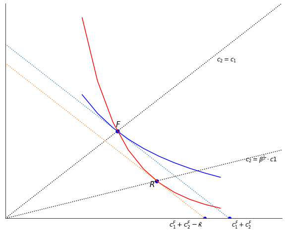

Replicate Figure 1¶
%matplotlib inline
import numpy as np
import matplotlib.pyplot as plt
from ipywidgets import interact,fixed
plt.rcParams['figure.figsize'] = 10, 8
np.set_printoptions(precision=2)
import Contract
def Figure1(cC, idl = False):
cCF = cC.fcommit()
cCRP = cC.reneg(cCF)
y = cC.y
c1min = 0
c1max = 160
c1 = np.arange(0, c1max, c1max/20)
c1_ = np.arange(40, c1max-40, c1max/20) # to clip indifference curves
ubar0 = cC.PVU(cCF[1:3], 1.0)
idc0 = cC.indif(ubar0, 1.0)
ubar1 = cC.PVU(cCF[1:3],cC.beta)
idc1 = cC.indif(ubar1,cC.beta)
ubar0RP = cC.PVU(cCRP[1:3], 1.0)
idc0RP = cC.indif(ubar0RP,1.0)
ubar1RP = cC.PVU(cCRP[1:3], cC.beta)
idc1RP = cC.indif(ubar1RP,cC.beta)
btr = cC.beta**(1/cC.rho)
q1 = (cCF[1]+cCF[2])/(1+btr)
q2 = btr*q1
fig, ax = plt.subplots()
# indifference curves
ax.plot(c1_,idc0(c1_),color='blue') # --Zeros's indif through F
ax.plot(c1_,idc1(c1_),color='red') # --One's indif through F
# rays
ax.plot(c1, c1,':',color='black')
ax.plot(c1, cC.beta**(1/cC.rho)*c1,':',color='black')
# isoprofit line(s)
isoprofline = cC.isoprofit(cC.profit(cCF,cC.y)-(y[0]-cCF[0]), y)
ax.plot(c1, isoprofline(c1),':' )
isoproflineK = cC.isoprofit(cC.profit(cCF,cC.y)-(y[0]-cCF[0])+cC.kbar(), y)
ax.plot(c1, isoproflineK(c1),':' )
# Axes
ax.spines['right'].set_color('none'), ax.spines['top'].set_color('none')
ax.set_ylim((c1min, c1max*0.9)), ax.set_xlim((c1min, c1max*0.9))
ax.xaxis.tick_bottom(), ax.yaxis.tick_left()
ax.set_xlabel('$c_{1}$'); ax.set_ylabel('$c_{2}$')
ax.axes.get_xaxis().set_visible(False)
ax.axes.get_yaxis().set_visible(False)
#-- Intercept points on y axis
ax.scatter(cCF[1]+cCF[2],0, marker='o',color='b')
ax.scatter(cCF[1]+cCF[2]- cC.kbar(),0, marker='o',color='b')
ax.text(cCF[1]+cCF[2] + 1, -6, r'$c_1^F+c_2^F$', fontsize=12)
ax.text(cCRP[1] + cCRP[2] - cC.kbar() - 6, -6, r'$c_1^F+c_2^F -\bar \kappa$', fontsize=13)
ax.text(c1max-50, c1max-55, r'$c_2=c_1$', fontsize=12)
ax.text(c1max-35, btr*(c1max-40), r'$c_2=\beta^\frac{1}{\rho} \cdot c1$', fontsize=12)
# label the points
ax.text(cCF[1]-1, cCF[2]+3, r'$F$', fontsize=15)
ax.text(cCRP[1]-4, cCRP[2]-4, r'$R$', fontsize=15) #-- temporarily R, usually P.
#ax.text(cCRP[1], -6, r'$c^{R}_{1}$', fontsize=15)
#ax.text(-8, cCRP[2], r'$c^{R}_{2}$', fontsize=15)
#ax.text(cCF[1], -6, r'$c^{*}_{1}$', fontsize=15)
#ax.text(-8, cCF[2], r'$c^{*}_{2}$', fontsize=15)
# trick to display contract points and coordinate lines http://bit.ly/1CaTMDX
xx = [cCF[1], cCRP[1]]
yy = [cCF[2], cCRP[2]]
ax.scatter(xx, yy, s=50, marker='o',color='b')
if idl: #indicator lines
[plt.plot([dot_x, dot_x] ,[0, dot_y],':',linewidth = 1,color='black' )
for dot_x, dot_y in zip(xx,yy) ]
[plt.plot([0, dot_x] ,[dot_y, dot_y],':',linewidth = 1,color='black' )
for dot_x, dot_y in zip(xx,yy) ]
def Fig1(beta = 0.4, rho = 0.8):
cC = Contract.Competitive(beta)
cC.rho = rho
Figure1(cC)
To see things more clearly, without having to zoom in, we’ll use slightly unusual parameters, but the essential relationships hold for more reasonable assumptions.
Fig1()

To use the widget sliders you must run this on a jupyter notebooks server.
interact(Fig1, beta = (0.3, 0.95, 0.05), rho=(0.3,1.2,0.1) );